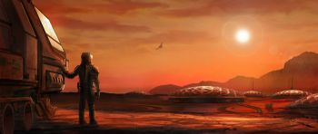
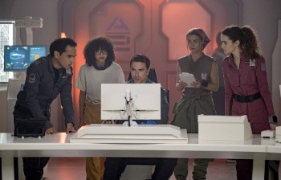
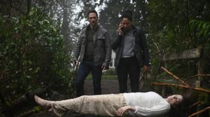
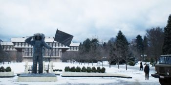
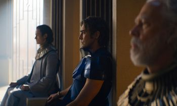
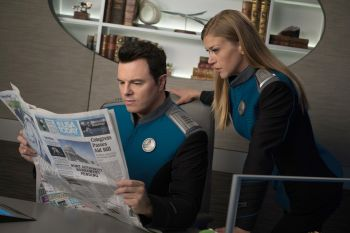
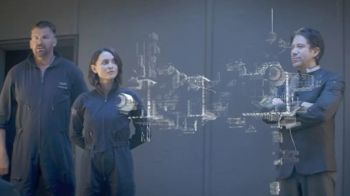
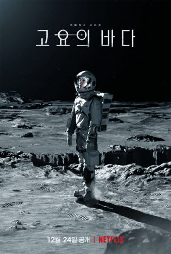

A film series is more than one film, each depicting parts of a larger story. Sometimes the work is conceived from the beginning as a multiple-film work, for example the Three Colours series, but in most cases the success of the original film inspires further films to be made. Individual sequels are relatively common, but are not always successful enough to spawn further installments.
The Marvel Cinematic Universe is the most highest grossing film series in unadjusted US Dollar figures surpassing the Harry Potter, Star Wars and James Bond series. However Peter Jackson's The Lord of the Rings has the highest average box office intake.

Space Opera is a subgenre of science fiction that emphasizes space warfare, melodramatic adventure, interplanetary battles, as well as chivalric romance, and often risk-taking. Set mainly or entirely in outer space, it usually involves conflict between opponents possessing advanced abilities, futuristic weapons, and other sophisticated technology. The term has no relation to music, but is instead a play on the terms "soap opera" and "horse opera", the latter of which was coined during the heyday of silent movies to indicate clichéd and formulaic Western movies. Space operas emerged in the 1930s and they continue to be produced in literature, film, comics, and video games.
Notable space opera novels include the Foundation series (1942–99) by Isaac Asimov et al. and the Ender's Game series (1985–present) by Orson Scott Card. An early notable space opera film was Flash Gordon (1936–present) created by Alex Raymond. In the late 1970s, the Star Wars franchise (1977–present) created by George Lucas brought a great deal of attention to the genre.
Definition:
Space opera is defined as an adventure science-fiction story.
The term "space opera" was coined in 1941 by fan writer (and later author) Wilson Tucker, in a fanzine article, as a pejorative term. At the time, serial radio dramas in the US had become popularly known as soap operas because many were sponsored by soap manufacturers. Tucker defined space opera as the science fiction equivalent: a "hacky, grinding, stinking, outworn, spaceship yarn". Even earlier, the term horse opera had come into use as a term for Western films. In fact, some fans and critics have noted that the plots of space operas have sometimes been taken from horse operas and simply translated into an outer space environment, as famously parodied on the back cover of the first issue of Galaxy Science Fiction. Still, during the late '20s and early '30s, when the stories were printed in science-fiction magazines, the stories were often referred to as "super-science epics".
Beginning in the 1960s, and widely accepted by the 1970s, the space opera was redefined, following Brian Aldiss' definition in Space Opera (1974) as (in the paraphrase Hartwell and Cramer) "the good old stuff". Yet soon after his redefinition, it began to be challenged, for example, by the editorial practice and marketing of Judy-Lynn del Rey and in the reviews of her husband and colleague Lester del Rey. In particular, they disputed the claims that space operas were obsolete, and Del Rey Books labeled reissues of earlier work of Leigh Brackett as space opera. By the early 1980s, space operas—adventure stories set in space—were again redefined, and the label was attached to major popular culture works such as Star Wars. The term space opera began to be recognized only in the early 1990s as a legitimate genre of science fiction. Hartwell and Cramer define space opera as "colorful, dramatic, large-scale science fiction adventure, competently and sometimes beautifully written, usually focused on a sympathetic, heroic central character and plot action, and usually set in the relatively distant future, and in space or on other worlds, characteristically optimistic in tone. It often deals with war, piracy, military virtues, and very large-scale action, large stakes."
The 100 (pronounced The Hundred ) is an American post-apocalyptic science fiction drama television series that premiered on March 19, 2014 on The CW, and ended on September 30, 2020. Developed by Jason Rothenberg, the series is loosely based on the young adult novel series of the same name by Kass Morgan. The 100 follows post-apocalyptic survivors from a space habitat, the Ark, who return to Earth nearly a century after a devastating nuclear apocalypse. The first people sent to Earth are a group of juvenile delinquents who encounter descendants of survivors of the nuclear disaster on the ground.
The main characters of juvenile prisoners includes Clarke Griffin (Eliza Taylor), Finn Collins (Thomas McDonell), Bellamy Blake (Bob Morley), Octavia Blake (Marie Avgeropoulos), Jasper Jordan (Devon Bostick), Monty Green (Christopher Larkin), Raven Reyes (Lindsey Morgan), and John Murphy (Richard Harmon). Other lead characters include Clarke's mother Dr. Abby Griffin (Paige Turco), Marcus Kane (Henry Ian Cusick), and Chancellor Thelonious Jaha (Isaiah Washington), all of whom are council members on the Ark.
Another Life is an American science fiction drama streaming television series created by Aaron Martin, which premiered on Netflix on July 25, 2019. The series stars Katee Sackhoff, Selma Blair, Justin Chatwin, Samuel Anderson, Elizabeth Ludlow, Blu Hunt, A.J. Rivera, Alexander Eling, Alex Ozerov, Jake Abel, JayR Tinaco, Lina Renna, Jessica Camacho, Barbara Williams, Parveen Dosanjh, Greg Hovanessian, Chanelle Peloso and Tyler Hoechlin. In October 2019, the series was renewed for a second season which was released on October 14, 2021.

The Ark is an American science fiction television series created by Dean Devlin and Jonathan Glassner, who also serve as showrunners for the series. It premiered on Syfy on February 1, 2023, with the first season consisting of twelve episodes. The series stars Christie Burke as Lt. Sharon Garnet who becomes the de facto captain of an interstellar spacecraft after a disaster. It also stars Reece Ritchie, Richard Fleeshman, Stacey Michelle Read, Ryan Adams, Pavle Jerinić, Shalini Peiris, Christina Wolfe, and Tiana Upcheva. In April 2023, the series was renewed for a second season.

Debris is an American science fiction television series on NBC that premiered on March 1, 2021. The series, produced by Universal Television and Legendary Television, was created, written, and co-executive produced by J. H. Wyman.
The Expanse is an American science fiction television series developed by Mark Fergus and Hawk Ostby, based on the series of novels of the same name by James S. A. Corey. The series is set in a future where humanity has colonized the Solar System. It follows a disparate band of protagonists—United Nations Security Council member Chrisjen Avasarala (Shohreh Aghdashloo), police detective Josephus Miller (Thomas Jane), ship's officer James Holden (Steven Strait) and his crew—as they unwittingly unravel and place themselves at the center of a conspiracy that threatens the system's fragile state of cold war.
The Expanse has received critical acclaim, with particular praise for its visuals, character development and political narrative. It received a Hugo Award for Best Dramatic Presentation and three Saturn Award nominations for Best Science Fiction Television Series. Ahead of the fifth season's release, Amazon renewed the series for a sixth and final season in November 2020.
AKA:
Movie: The Expanse: One Ship
Storyline: An anthology of short webisodes of The Expanse, all relating to the Doctrine of One Ship - that there is only one ship, and it has countless parts as a single body has countless cells.
Genres: Sci-Fi
Actor: Shohreh Aghdashloo, Wes Chatham, Nadine Nicole
Creator: Mark Fergus, Hawk Ostby
Country: United States
Duration: 6 min
Release: December 10, 2021 (United States)

For All Mankind is an American science fiction drama television series created by Ronald D. Moore, Matt Wolpert, and Ben Nedivi and produced for Apple TV+. The series dramatizes an alternate history depicting "what would have happened if the global space race had never ended" after the Soviet Union succeeds in the first crewed Moon landing ahead of the United States. The title is inspired by the lunar plaque left on the Moon by the crew of Apollo 11, which reads, in part, "We Came in Peace for All Mankind".
The series stars an ensemble cast including Joel Kinnaman, Michael Dorman, Sarah Jones, Shantel VanSanten, Jodi Balfour, Wrenn Schmidt, Sonya Walger, and Krys Marshall. Cynthy Wu, Casey W. Johnson, and Coral Peña joined the main cast for the second season, and Edi Gathegi joined in the third. The series features historical figures (played by actors or appearing through archival footage) including Apollo 11 astronauts Neil Armstrong, Buzz Aldrin, and Michael Collins, Mercury Seven astronaut Deke Slayton, rocket scientist Wernher von Braun, astronaut Sally Ride, NASA administrator Thomas Paine, NASA flight director Gene Kranz, U.S. senators Ted Kennedy and Gary Hart, along with U.S. presidents John F. Kennedy, Richard Nixon, Jimmy Carter, Ronald Reagan, George H. W. Bush and Bill Clinton.
For All Mankind premiered on November 1, 2019. The second season was critically acclaimed and was nominated for the TCA Award for Outstanding Achievement in Drama. In July 2022, the series was renewed for a fourth season, which premiered on November 10, 2023. In 2023, the writers said that, from the beginning, they had discussed that their goal was that there would be "about seven seasons" and that the story will span "at least 70 years". In April 2024, the series was renewed for a fifth season, and it was announced that a spinoff series titled Star City, focusing on the Soviet space program, was in development.

Foundation is an American science fiction streaming television series created by David S. Goyer and Josh Friedman for Apple TV+, loosely based on the Foundation series of stories by Isaac Asimov. It features an ensemble cast led by Jared Harris, Lee Pace, Lou Llobell and Leah Harvey. The series premiered on September 24, 2021. In October 2021, the series was renewed for a second season, which premiered on July 14, 2023. In December 2023, the series was renewed for a third season.
The first season received some positive reviews, with praise aimed towards its performances (Pace and Harris in particular), epic scale, visual effects and score by Bear McCreary. However, the pacing, specifically of the time jumps, use of narration and complexity of plot were often criticized.
The second season received more positive reviews from critics, with many agreeing that it was an improvement over its first season, emphasizing the more accessible pacing, better plot, improved interpersonal characterizations and overall satisfaction with the season's payoff.
Halo is an American military science fiction television series produced by Showtime in association with 343 Industries and Amblin Television for Paramount+. Based on the video game franchise of the same name, the series follows a 26th-century war between the United Nations Space Command and the Covenant, a theocratic-military alliance of several alien races determined to eradicate humanity. Pablo Schreiber and Jen Taylor star as Master Chief Petty Officer John-117 and Cortana; the latter reprises her voice role from the video game series.
Development for a Halo television series began in mid-2013. Kyle Killen was hired in June 2018 to serve as the showrunner, and the series officially announced a nine-episode order for Paramount+. Steven Kane was also hired in March 2019 to serve as a co-showrunner, alongside Killen. Filming began in Ontario, Canada, in October 2019, although post-production for the first five episodes was affected due to the COVID-19 pandemic. Filming eventually resumed in Budapest, Hungary, in February 2021.
The first season of Halo premiered on March 24, 2022, and ran until May 19. It was met with mixed reviews, with praise given for its action scenes, cast, and visual effects but criticism for its derivative writing and alterations from the source material. A second season, consisting of eight episodes, premiered on February 8, 2024 and is set to run through March 21.
Moonhaven is a dystopian science fiction television series produced by AMC+ that premiered on July 7, 2022. The series depicts a quasi-utopian community set on a part of the Moon, intended to develop the technical and cultural means to save a ravaged Earth. The first episode begins with a murder, and the first season develops around a pivotal event for this project on the Moon, called the Bridge, when the first generations of Mooners, as the people from this community are called, will go back to Earth to teach the Earthers a way to overcome their ecological and economic crisis.
The series is directed by Peter Ocko, and the cast includes Dominic Monaghan, Emma McDonald, Kadeem Hardison, Amara Karan, and Joe Manganiello.
On July 28, 2022, it was reported that the series has been renewed for a second season by AMC+. A few months later, the series was canceled as AMC+ decided to not move forward with the second season.

The Orville is an American science fiction comedy-drama television series created by Seth MacFarlane, who also stars as the protagonist Ed Mercer, an officer in the Planetary Union's line of exploratory space vessels in the 25th century. It was inspired primarily by the original Star Trek and its Next Generation successor, both of which it heavily parodies and pays homage to. The series also uses inspiration from the Star Wars franchise and games like the Mass Effect series. It follows the crew of the starship USS Orville on their episodic adventures, as well as a serialized story which develops over the length of the series.
Produced by Fuzzy Door Productions and 20th Television, The Orville premiered on September 10, 2017 and ran for two seasons on Fox and became available on streaming service Hulu the following day, followed by a third season exclusively on Hulu. Season one received generally negative reviews while seasons two and three received critical acclaim. The show had relatively successful ratings on Fox, becoming the broadcaster's highest-rated Thursday show as well as Fox's "most-viewed debut drama" since 2015.
Pandora is an American science fiction television series that aired on The CW. The series premiered on July 16, 2019. It consisted of two seasons of 23 episodes, airing its final episode on December 13, 2020.

Salvage Marines is an American Sci-Fi television series, created by Sean-Michael Argo, Rafael Jordan, and Jamie R. Thompson, based on the Necrospace novel series by Sean-Michael Argo, and starring Casper Van Dien. The show premiered on July 28, 2022 with all six episodes of the first season being available to watch on that date.
The North American distribution rights were acquired by Screen Media on June 7, 2022.
The series was first announced by SPI International on April 10, 2019 as one of four TV series they would be producing, in partnership with Philippe Martinez.

The Silent Sea (Korean: 고요의 바다; RR: Goyo-eui bada) is a 2021 South Korean sci-fi mystery thriller streaming television series starring Bae Doona, Gong Yoo and Lee Joon. The series is an adaptation from the 2014 short film The Sea of Tranquility written and directed by Choi Hang-yong who will also direct the series. It premiered on Netflix on December 24, 2021.